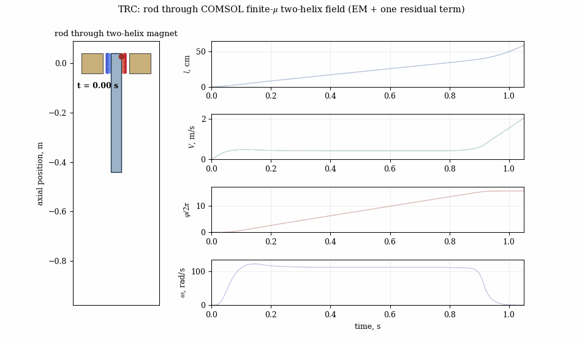
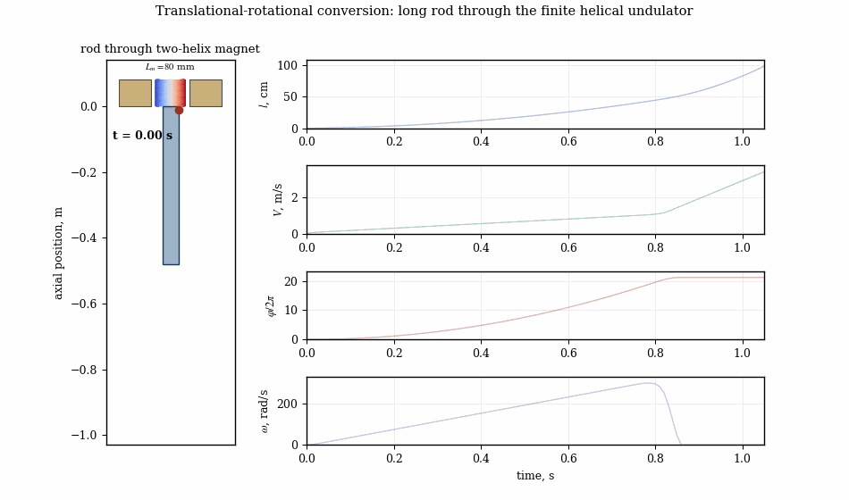

Applied magnetism · Magnet systems
Applied magnetism & permanent-magnet undulators
Undulators and magnet systems are only as good as their field. As head of the Applied Magnetic Systems Laboratory, I design permanent-magnet (NdFeB) helical undulators and related magnet assemblies, computing the field with magnetostatic simulation and validating against measurement.


What the modeling delivers
For a candidate magnet geometry — helices, ring sectors, or Halbach-type arrays — the model computes the three-dimensional field, the on-axis amplitude and its spatial harmonics, and the forces and torques on the assembly. Parametric sweeps then quantify how field amplitude and quality respond to geometry and to realistic magnet tolerances, which is essential for a manufacturable design.
From model to hardware
This work supports compact permanent-magnet undulators for free-electron radiation sources and inverse-FEL acceleration (see compact accelerators), including an international industrial collaboration on undulator fabrication. The same magnetostatic workflow applies to sensors, actuators and magnet systems generally.